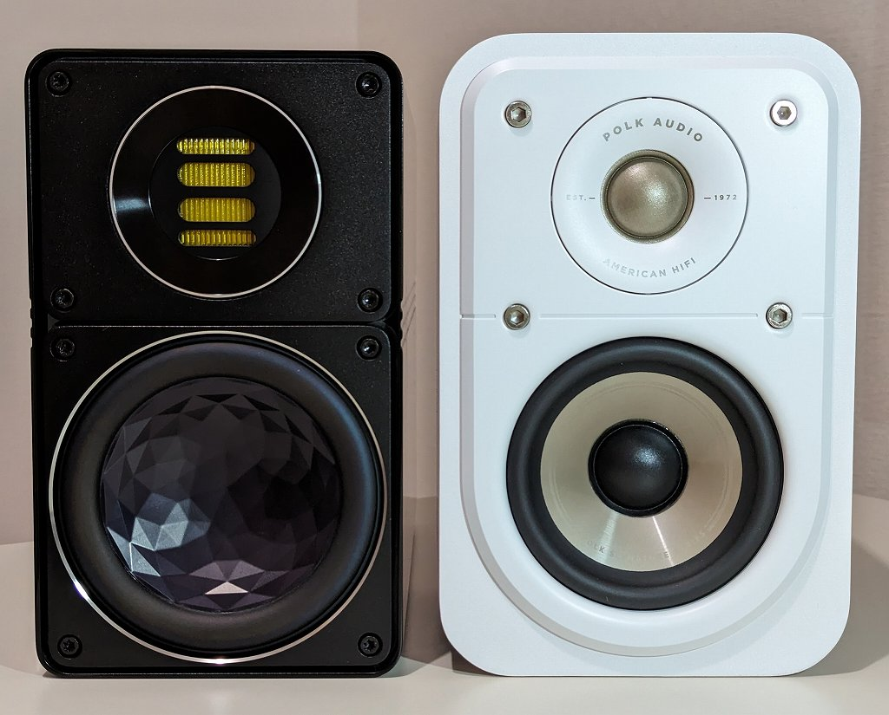
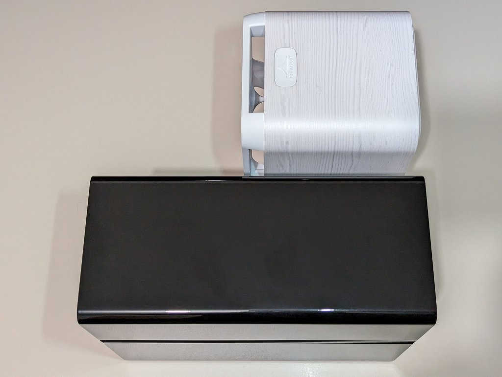

Polk Audio Signature Elite ES10
概要
サラウンド用にスピーカーが欲しくなったので手頃な価格(実売$189=\26k(税抜))で評判の良い Polk Audio のサテライトスピーカー ES10 を買ってみたので、気になったことなどのまとめ。
外観


購入した Polk Audio ES10 (白色) と普段使用している ELAC BS312 (黒色) と並べてみました。そもそも BS312 がコンパクトなので、ES10 は全面投影面積が一回り大きい代わりに奥行き半分という小型がウリなのにそんなに小型と感じないサイズになります。音質面では大きさがあると有利なのは間違いないのでこのあたりが落としどころなんでしょう。
気にするほどではないですが、ターミナルのプラが傷つきやすくバナナプラグを挿すためのピンを抜くだけで傷がつきました。ネジザウルス使えとかいうレビューも見かけましたが、(持っていないので)私はカイコーンPROのおしりで取りました。
ステレオ視聴
レビューをいくつか見たところ、サラウンド用なら十分だけどステレオ用途なら不満出るかもという感じ。というわけでまずは普段使っているステレオ環境で試してみました。機材は以下の通り。
- Polk Audio ES10
- Denon PMA-150H
- AIRBOW WFB-2129-60/A4HD
- TAOC WST-C60HB
スピーカーから音が出た瞬間、分解能が高くてハイレゾを聞き分けられて普通の人にとっては十分いい音だと感じられるんだろうなという第一印象でした。低音に関してそもそも期待はしていませんでしたが、低音が出ないということは全然ありません。ただ BS312 と比較して低音が遅いので同じ曲を聴いても印象が大きく変わります。音が増えてくると音が混ざってきて滑らかに聞こえなくなる感じで、今まで聴き疲れするスピーカーってものがわからなかったのですがこういう音なのかなと思うような音でした。それに他のスピーカーと比べて高音から低音まで全体のバランスがしっくりこない印象で、サラウンド用＝映画やゲームに合わせてチューニングされているということなのかと。あと高音に関してツイーターをきっちり耳の高さに合わせないといけなくて、音場が広くない感じなのでパーソナル向きなのかもしれません。
というわけで、エージングで変化するのかもしれませんが、ステレオ用途だといまいちというレビューが解った気がします。ステレオ用途にチューニングしていると思われる ES15・ES20 ならまた違った印象になるんでしょうかね。
サラウンド視聴
// 気が向いたら書く